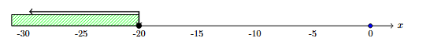
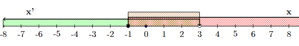

1 Ανισώσεις α βαθμού
1.1 Ανισώσεις
Θεωρία και Ορισμοί
Ανίσωση με έναν άγνωστο ονομάζεται κάθε έκφραση της μορφής \(f(x) > \phi(x)\) ή \(f(x) < \phi(x)\).
Μέλη της ανίσωσης: Η έκφραση αριστερά του συμβόλου της ανισότητας λέγεται πρώτο μέλος και η έκφραση δεξιά δεύτερο μέλος.
Ρίζα ή λύση μιας ανίσωσης είναι κάθε πραγματικός αριθμός που, όταν αντικαταστήσει τον άγνωστο \(x\), καθιστά την ανισότητα αληθή αριθμητική πρόταση.
Βαθμός ανίσωσης ονομάζεται ο μεγαλύτερος εκθέτης του αγνώστου στην αναγμένη μορφή της (π.χ. ανίσωση 1ου βαθμού: \(\alpha x + \beta > 0\)).
Αδύνατη λέγεται μια ανίσωση που δεν έχει καμία λύση, ενώ αόριστη (ή ταυτότητα) εκείνη που αληθεύει για κάθε τιμή του αγνώστου.
Ιδιότητες
Πρόσθεση/Αφαίρεση: Αν στα δύο μέλη μιας ανίσωσης προσθέσουμε ή αφαιρέσουμε τον ίδιο αριθμό, προκύπτει ομοιόστροφη ανίσωση (\[\alpha > \beta \Leftrightarrow \alpha \pm \gamma > \beta \pm \gamma\]).
Πολλαπλασιασμός/Διαίρεση με θετικό αριθμό: Αν πολλαπλασιάσουμε ή διαιρέσουμε και τα δύο μέλη με τον ίδιο θετικό αριθμό, η φορά της ανίσωσης παραμένει η ίδια.
\[\begin{cases} a>β\\ θ>0 \end{cases} \Rightarrow \begin{cases} α\cdotθ>β\cdotθ \end{cases}\]
\[\begin{cases} a>β\\ θ>0 \end{cases} \Rightarrow \begin{cases} \dfrac{a}{θ}>\dfrac{β}{θ} \end{cases}\]
- Πολλαπλασιασμός/Διαίρεση με αρνητικό αριθμό: Αν πολλαπλασιάσουμε ή διαιρέσουμε και τα δύο μέλη με τον ίδιο αρνητικό αριθμό, η φορά της ανίσωσης αλλάζει.
\[\begin{cases} a>β\\ θ<0 \end{cases} \Rightarrow \begin{cases} a \cdotθ<β\cdotθ \end{cases}\]
\[\begin{cases} a>β\\ θ<0 \end{cases} \Rightarrow \begin{cases} \dfrac{a}{θ}<\dfrac{β}{θ} \end{cases}\]
- Αντίθετοι αριθμοί: Αν αλλάξουμε τα πρόσημα και στα δύο μέλη, πρέπει να αλλάξουμε και τη φορά της ανίσωσης.
\[α>β \Rightarrow -a<-β\]
- Πρόσθεση κατά μέλη: Μπορούμε να προσθέσουμε κατά μέλη δύο ή περισσότερες ομοιόστροφες ανισότητες.
\[\begin{cases} a>β\\ γ>δ \end{cases} \Rightarrow \begin{cases} α+γ>β+δ \end{cases}\]
Παραδείγματα
- \(3x - 2 > 2x + 1\) (ανίσωση 1ου βαθμού).
- \(x^2 + 4x + 3 < 0\) (ανίσωση 2ου βαθμού).
- Αν \(x > 5\) τότε \(-x < -5\) (ιδιότητα αντιθέτων).
- Αν \(x > y\) και \(w > z\), τότε \(x+w > y+z\) (πρόσθεση κατά μέλη).
- \(0x > 5\) (αδύνατη ανίσωση αν \(0 > 5\) είναι ψευδές).
Ασκήσεις
- Προσδιορίστε τα μέλη της ανίσωσης \(4x - 7 < 2x - 1\).
- Ελέγξτε αν ο αριθμός \(x = 2\) είναι λύση της \(3x + 1 > 5\).
- Γράψτε τη σχέση «ο \(x\) είναι θετικός» χρησιμοποιώντας σύμβολο ανισότητας.
- Αν \(x < y\), τι συμπεραίνετε για τη σχέση \(3x\) και \(3y\);.
- Αν \(x > y\), τι συμπεραίνετε για τη σχέση \(-2x\) και \(-2y\);.
- Βρείτε την απόλυτη τιμή των αριθμών \(+3\) και \(-9\).
- Κατατάξτε κατά σειρά μεγέθους τους αριθμούς: \(-8, 2, 7, -5, 25, -6\).
- Επαληθεύστε την ιδιότητα \(\alpha < \beta \Rightarrow 2\alpha < \alpha + \beta < 2\beta\).
- Συμπληρώστε την ισότητα \(x - 5 + \dots = 0\).
- Προσδιορίστε αν η σχέση \(\alpha \perp \beta\) (καθετότητα) είναι σχέση ισοδυναμίας.
1.2 Επίλυση ανισώσεων
Θεωρία και Ορισμοί
Επίλυση ανίσωσης είναι η διαδικασία εύρεσης όλων των ριζών της.
Λύση μιας ανίσωσης είναι κάθε τιμή της μεταβλητής που την επαληθεύει. Σε αντίθεση με τις εξισώσεις, μια ανίσωση έχει συνήθως άπειρες λύσεις, οι οποίες αποτελούν ένα σύνολο.
Ισοδύναμες ανισώσεις ονομάζονται εκείνες που έχουν ακριβώς τις ίδιες λύσεις.
Η επίλυση στοχεύει στον μετασχηματισμό της ανίσωσης στην απλούστερη μορφή \(x > \rho\) ή \(x < \rho\).
Ιδιότητες και Βήματα Επίλυσης
Απαλοιφή παρονομαστών: Πολλαπλασιάζουμε όλα τα μέλη με το Ε.Κ.Π. των παρονομαστών (αν είναι θετικό, η φορά παραμένει).
Απαλοιφή παρενθέσεων: Εκτελούμε τις σημειωμένες πράξεις.
Χωρισμός αγνώστων από γνωστούς: Μεταφέρουμε τους όρους με \(x\) στο ένα μέλος και τους σταθερούς αριθμούς στο άλλο, αλλάζοντας το πρόσημό τους.
Αναγωγή ομοίων όρων: Καταλήγουμε στη μορφή \(\alpha x > \beta\).
Διαίρεση με τον συντελεστή του αγνώστου: Αν \(\alpha > 0\), τότε \(x > -\beta/\alpha\). Αν \(\alpha < 0\), τότε η φορά αλλάζει σε \(x < -\beta/\alpha\).
Παραδείγματα
- \(2x > 10 \Rightarrow x > 5\).
- \(-3x > 12 \Rightarrow x < -4\) (αλλαγή φοράς λόγω διαίρεσης με αρνητικό).
- \(\dfrac{x}{2} - 1 < 3 \Rightarrow x - 2 < 6 \Rightarrow x < 8\).
- \(2(x-1) > x+5 \Rightarrow 2x-2 > x+5 \Rightarrow x > 7\).
- \(0x > -19\) (αόριστη, αληθεύει για κάθε \(x \in R\)).
Ασκήσεις
- Λύστε την ανίσωση \(5x - 10 > 0\).
- Λύστε την ανίσωση \(-2x + 4 \ge 0\).
- Επιλύστε την \(4x - 6 < 16 - 12x\).
- Λύστε και παραστήστε στον άξονα την \(\dfrac{4x}{3} - \dfrac{3x+2}{4} < x+1\).
- Λύστε την \((x-2)^2 + (x-1)(x-3) < \dfrac{1}{2}(7x+1)(x-2)\).
- Βρείτε τις λύσεις της \(x - \dfrac{x-1}{3} < \dfrac{x+1}{2}\).
- Λύστε την ανίσωση \(\dfrac{1-2x}{3} > \dfrac{2-3x}{5}\).
- Επιλύστε την \(2(x-3) - \dfrac{1}{2} > 3(x-2) + \dfrac{5x+1}{6} + \dfrac{1}{2}\).
- Βρείτε το σύνολο λύσεων της \(\dfrac{2x-4}{3} < 2\).
- Λύστε την ανίσωση \(\lambda(x+2\lambda) - 1 > 1 - x\) ως προς \(x\) (διερεύνηση).
1.3 Προβλήματα που λύνονται με ανισώσεις
Θεωρία και Ορισμοί
Η επίλυση προβλημάτων με ανισώσεις απαιτεί τη μετάφραση μιας λεκτικής διατύπωσης σε ανίσωση, όπου αναζητείται ένα διάστημα τιμών αντί για μία μοναδική τιμή.
Περιορισμοί: Πριν τη λύση, καθορίζουμε αν ο \(x\) πρέπει να είναι ακέραιος, θετικός κ.λπ..
Συναληθεύουσες ανισώσεις: Πολλά προβλήματα απαιτούν την εύρεση τιμών που ικανοποιούν δύο ή περισσότερες ανισώσεις ταυτόχρονα.
Παραδείγματα
- Πρόβλημα εύρους: Ποιοι είναι οι ακέραιοι \(x\) που είναι μεγαλύτεροι του \(-2\) και μικρότεροι του \(5\); Λύση: \(-2 < x < 5\).
- Γεωμετρικό πρόβλημα: Σε ένα τρίγωνο, μια πλευρά \(x\) πρέπει να είναι μικρότερη από το άθροισμα των άλλων δύο (π.χ. \(x < 5+8\)) και μεγαλύτερη από τη διαφορά τους (\(x > 8-5\)).
- Συναλήθευση: Βρείτε τις κοινές λύσεις των \(2x + 3 < 9 - x\) και \(3x + 7 > 0\). Λύση: \(-7/3 < x < 2\).
- Πρόβλημα “τουλάχιστον”: Ένα υποβρύχιο βρίσκεται σε βάθος τουλάχιστον \(100m\). Αν ανέβει \(20m\), σε τι βάθος βρίσκεται; (\(x \le -100 + 20\)).
- Περιορισμοί σε προβλήματα: Σε πρόβλημα με αριθμό τέκνων, αν προκύψει λύση \(x = 2,5\), η λύση απορρίπτεται ως απαράδεκτη.
Ασκήσεις
- Ποιοι είναι οι ακέραιοι \(x\) για τους οποίους ισχύει \(-5 < x < 7\);.
- Βρείτε τους φυσικούς αριθμούς που επαληθεύουν την \(x + 10 = 264\) (ως όριο ανισότητας).
- Προσδιορίστε το διάστημα τιμών του \(x\) αν \(x-8 < 1\) και \(x+12 > 3x\).
- Αν ο \(x\) είναι ακέραιος, βρείτε τις κοινές λύσεις των \(-7 \le x \le 4\) και \(-1 < x\).
- Σε ένα τρίγωνο με πλευρές \(10cm\) και \(16cm\), ποιο είναι το εύρος της τρίτης πλευράς \(x\);.
- Βρείτε τις τιμές του \(x\) για τις οποίες συναληθεύουν οι \(3x - 2 > 4x + 1\) και \(3(x+2) < 4x + 7\).
- Ένας μαθητής είπε: «Αν ελαττώσετε τον βαθμό μου κατά \(4\) ή αν τον διαιρέσετε με το \(3\), βρίσκετε τον ίδιο αριθμό». (Μετατρέψτε το σε ανισότητα αν ο βαθμός είναι «τουλάχιστον» \(5\)).
- Προσδιορίστε το \(x\) ώστε το διπλάσιο ενός αριθμού αυξημένο κατά \(10\) να είναι μικρότερο του \(49\).
- Βρείτε το κοινό διάστημα λύσεων των \(2(2x+1) > 3 - \dfrac{x}{2}\) και \(\dfrac{2x-1}{3} < \dfrac{3x-14}{12} + \dfrac{3x-2}{4}\).
- Ποιο είναι το σημειοσύνολο των ακεραίων \(x\) επί του άξονα που ικανοποιούν τη σχέση \(-2 \le x < 7\) και \(-6 < x \le 5\);.
1.3.1 Βήματα Επίλυσης
Παράδειγμα: Να λυθεί η ανίσωση \[\frac{3x}{5}-\frac{2(x+5)}{5}\ge \frac{x}{2}+4\]
Η διαδικασία είναι παρόμοια με αυτή των εξισώσεων:
- Απαλοιφή παρονομαστών (αν υπάρχουν) πολλαπλασιάζοντας όλα τα μέλη με το Ε.Κ.Π..
Ε.Κ.Π(5,2)=10 Άρα θα έχουμε
\[10\times\frac{3x}{5}-10\times\frac{2(x+5)}{5}\ge 10\times\frac{x}{2}+10\times4\] ή
\[\require{cancel}\cancelto{2}{10}\times\frac{3x}{5}-\cancelto{2}{10}\times\frac{2(x+5)}{5}\ge \cancelto{5}{10}\times\frac{x}{2}+10\times4\]
\[2\times{3x}-2\times{2(x+5)}\ge 5\times{x}+10\times4\]
- Απαλοιφή παρενθέσεων με την επιμεριστική ιδιότητα.
\[6\cdot x-4\cdot(x+5)\ge 5\cdot{x}+40\] ή \[2x-4x-20 \ge5x+40\]
- Χωρισμός γνωστών από αγνώστους (μεταφορά όρων με αλλαγή προσήμου).
\[6x-4x-5x\ge20+40\]
- Αναγωγή ομοίων όρων.
\[-3x \ge 60\]
- Διαίρεση με τον συντελεστή του αγνώστου (προσοχή στη φορά αν ο συντελεστής είναι αρνητικός).
\[\frac{-3x}{-3} \le \frac{60}{-3}\] η \[x\le-\frac{60}{3} \quad \text{ ή } \quad x\le=-20\]
Γραφική απεικόνιση της λύσης

ή \(x \in (-\infty,-20]\)
1.4 2. Ειδικές Περιπτώσεις & Συστήματα
- Αδύνατη Ανίσωση: Όταν καταλήγουμε σε μια ψευδή σχέση, όπως \(0x > 8\), η ανίσωση δεν έχει λύση.
Παράδειγμα Αδύνατης Ανίσωσης
Μια ανίσωση ονομάζεται αδύνατη όταν δεν επαληθεύεται για καμία τιμή της μεταβλητής.
Άσκηση: Να λυθεί η ανίσωση \(x + 2 + 2(x - 3) > 3x + 4\).
Βήμα 1 (Επιμεριστική): \(x + 2 + 2x - 6 > 3x + 4\).
Βήμα 2 (Χωρισμός όρων): \(x + 2x - 3x > 4 - 2 + 6\).
Βήμα 3 (Αναγωγή ομοίων όρων): \(0x > 8\).
Συμπέρασμα: Επειδή το γινόμενο \(0x\) είναι πάντα ίσο με \(0\), η σχέση \(0 > 8\) είναι ψευδής για κάθε τιμή του \(x\). Επομένως, η ανίσωση είναι αδύνατη.
Αόριστη Ανίσωση (Ταυτότητα): Όταν καταλήγουμε σε μια πάντα αληθή σχέση, όπως \(0x < 8\), η ανίσωση αληθεύει για κάθε πραγματική τιμή του \(x\).
Παράδειγμα Αόριστης Ανίσωσης (Ταυτότητα)
Μια ανίσωση είναι αόριστη (ή αληθής για κάθε τιμή) όταν επαληθεύεται από κάθε πραγματικό αριθμό.
Άσκηση: Να λυθεί η ανίσωση \(3x - 5 + x < 4x + 3\).
Βήμα 1 (Χωρισμός όρων): \(3x + x - 4x < 3 + 5\).
Βήμα 2 (Αναγωγή ομοίων όρων): \(0x < 8\).
Συμπέρασμα: Η σχέση \(0 < 8\) ισχύει πάντα, ανεξάρτητα από την τιμή που θα δώσουμε στο \(x\). Άρα, η ανίσωση αληθεύει για κάθε τιμή της μεταβλητής \(x\).
Συναλήθευση (Συστήματα): Για να βρούμε τις κοινές λύσεις δύο ή περισσότερων ανισώσεων, τις λύνουμε χωριστά και αναπαριστούμε τις λύσεις τους στην ίδια ευθεία αριθμών. Οι κοινές λύσεις αποτελούν τη λύση του συστήματος.
Διαστήματα: Οι λύσεις μπορούν να γραφτούν συμβολικά ως διαστήματα (π.χ. \(x \in (3, +\infty)\) για \(x > 3\)) ή γραφικά στην ευθεία των αριθμών με κυκλάκια
- (ανοικτό \(\circ\) αν η τιμή δεν συμπεριλαμβάνεται,
- κλειστό \(\bullet\) αν συμπεριλαμβάνεται).
Παράδειγμα Συστήματος Ανισώσεων
Για να λύσουμε ένα σύστημα, βρίσκουμε τις κοινές λύσεις (συναλήθευση) των ανισώσεων που το αποτελούν.
Άσκηση: Να βρεθούν οι κοινές λύσεις των ανισώσεων \(2x - 1 \geq x - 2\) και \(\dfrac{x+6}{3} < 3\).
Λύση 1ης ανίσωσης: \(2x - 1 \geq x - 2 \implies 2x - x \geq 1 - 2 \implies \mathbf{x \geq -1}\).
Λύση 2ης ανίσωσης: \(\dfrac{x+6}{3} < 3 \implies x + 6 < 9 \implies x < 9 - 6 \implies \mathbf{x < 3}\).
* Συναλήθευση: Αναπαριστούμε τις λύσεις στην ίδια ευθεία αριθμών.

Οι κοινές λύσεις είναι οι αριθμοί που είναι μεγαλύτεροι ή ίσοι του \(-1\) και ταυτόχρονα μικρότεροι του \(3\). * Τελικό Αποτέλεσμα: Το σύνολο των λύσεων είναι \(-1 \leq x < 3\) ή συμβολικά το διάστημα \(x \in [-1, 3)\).
1.5 3. Ασκήσεις για Εξάσκηση
1.5.1 Α. Βασικές Ανισώσεις
- Να λύσετε την ανίσωση: \(8x + 4 \geq 16 + 5x\).
- Να λύσετε την ανίσωση: \(2(x - 1) - 3(x + 1) \geq 4(x + 2) + 12\) και να παραστήσετε τη λύση στην ευθεία των αριθμών.
- Να λύσετε την ανίσωση με παρονομαστές: \(\dfrac{2(x-4)}{3} \leq \dfrac{x+8}{2} - \dfrac{4x-5}{6}\).
1.5.2 Β. Συστήματα Ανισώσεων
- Να βρείτε τις κοινές λύσεις των ανισώσεων: \(2x - 1 \geq x - 2\) και \(\dfrac{x+6}{3} < 3\).
- Να βρείτε το σύνολο των λύσεων που ικανοποιούν ταυτόχρονα τις: \(x - 4 < 1\) και \(2 - x < 3\).
1.5.3 Γ. Προβλήματα με Ανισώσεις
- Κόστος Διαδρομών: Μια μηνιαία κάρτα λεωφορείου κοστίζει €40, ενώ η απλή διαδρομή €1,50. Πόσες διαδρομές πρέπει να κάνει κάποιος το μήνα ώστε να τον συμφέρει η κάρτα;.
- Μισθός και Προμήθεια: Ένας υπάλληλος έχει βασικό μισθό €700 και παίρνει 8% προμήθεια επί των πωλήσεων. Πόσες πωλήσεις πρέπει να κάνει για να λάβει τουλάχιστον €2300 το μήνα;.
1.6 4. Ερωτήσεις Κατανόησης (Σωστό/Λάθος)
- Αν \(\alpha < \beta\), τότε \(-\alpha < -\beta\). (Λάθος, η φορά αλλάζει).
- Η ανίσωση \(0x = 0\) είναι αόριστη. (Σωστό).
- Αν \(\alpha > 1\), τότε \(1 > \dfrac{1}{\alpha}\). (Σωστό).
1.7 Ασκήσεις Ανισώσεων (Για επίλυση)
- Να λύσετε την ανίσωση: \(8x + 4 \geq 16 + 5x\).
- Να εξετάσετε αν η ανίσωση \(x + 2 + 2(x - 3) > 3x + 4\) έχει λύσεις.
- Να βρείτε τις κοινές λύσεις των ανισώσεων: \(x - 4 < 1\) και \(2 - x < 3\).
- Να προσδιορίσετε το σύνολο λύσεων της ανίσωσης: \(3x - 5 + x < 4x + 3\).
- Να λύσετε την ανίσωση και να παραστήσετε τη λύση γραφικά: \(x + 3 > -2\).
- Να δείξετε αν η ανίσωση \(2(\kappa - 1) - 3\kappa \geq 5 - \kappa\) είναι αδύνατη.
- Να λύσετε το σύστημα: \(3x - 5 \geq x + 3\) και \(4 < 14 + 5x\).
- Να χαρακτηρίσετε την ανίσωση: \(x + 500 > x + 499\).
- Να λύσετε την ανίσωση με παρονομαστές: \(\dfrac{3x - 4}{4} - \dfrac{2 - x}{3} > 1\).
- Να βρείτε το διάστημα των κοινών λύσεων για τις ανισώσεις: \(x < 5\) και \(x \geq -2\).
- Να εξετάσετε την ανίσωση: \(3y - 5 + y > 4y + 3\).
- Να λύσετε την ανίσωση: \(2(x - 1) - 3(x + 2) < 4(x + 1) - 5(x - 2)\).
- Να βρείτε τις κοινές λύσεις του συστήματος: \(2x - 1 \geq x - 2\) και \(\dfrac{x+6}{3} < 3\).
- Να λύσετε την ανίσωση: \(-(1 - x) > 2x - 1\).
- Να αποδείξετε ότι η ανίσωση \(5x + 3 < 5x - 2\) είναι αδύνατη.
- Να λύσετε την ανίσωση: \(2(x + 4) - 4x \leq 8 - 2x\).
- Να προσδιορίσετε τις κοινές λύσεις: \(3(x + 2) < x - 4\) και \(3x + 2 \geq 5x - 6\).
- Να λύσετε την ανίσωση: \(-7x + 3 \geq 4 - x\).
- Να εξετάσετε αν η ανίσωση \(0x \geq 10\) έχει λύση.
- Να βρείτε το σύνολο λύσεων της ανίσωσης: \(5(x + 3) \geq 5x + 3\).
- Να λύσετε το σύστημα: \(2(x + 1) + x > 6 - 2x\) και \(7x - 8 > 3(x + 3) + 7\).
- Να λύσετε την ανίσωση: \(3(\omega - 1) > \omega - 2\).
- Να χαρακτηρίσετε την ανίσωση \(x - (x + 5) > 0\) ως προς το πλήθος των λύσεών της.
- Να λύσετε την ανίσωση: \(0x < 8\).
- Να βρείτε τις κοινές λύσεις των ανισώσεων: \(3x - 1 > 2(1 - x) + 7\) και \(3(1 - x) \geq 6\).
- Να λύσετε την ανίσωση: \(2x + 2 - (x - 2) \geq 4 - x\).
- Να εξετάσετε αν η ανίσωση \(\dfrac{x}{2} + 1 > \dfrac{x+5}{2}\) είναι αδύνατη.
- Να λύσετε την ανίσωση: \(x - 2 < x + 5\).
- Να βρείτε τις τιμές που συναληθεύουν στις: \(y \geq 2\) και \(y \leq 7 \dfrac{1}{2}\).
- Να λύσετε την ανίσωση: \(3y - 1 - (y + 2) < 2(y + 2) + 1\).
- Να αποδείξετε ότι η ανίσωση \(3(x + 2) - 3x < -4\) δεν έχει λύση.
- Να λύσετε την ανίσωση: \(4x + 1 > 4x - 10\).
- Να βρείτε τις κοινές λύσεις για το σύστημα τριών ανισώσεων: \(2x - 1 < 7\), \(3(x - 1) > -6\) και \(x \geq 3(x - 2)\).
- Να λύσετε την ανίσωση: \(4(t + 5) < t - 4\).
- Να εξετάσετε αν η ανίσωση \(4(x - 1) + 2 \geq 4x + 7\) είναι αδύνατη.
- Να λύσετε την ανίσωση: \(3(x - 1) \leq 3x + 2\).
- Να βρείτε τις κοινές λύσεις των ανισώσεων: \(x < -3\) και \(x \geq -1\).
- Να λύσετε την ανίσωση: \(x - 1 \geq 2x\).
- Να αποδείξετε ότι η ανίσωση \(\dfrac{2x+4}{2} \geq x - 1\) αληθεύει για κάθε τιμή του \(x\).
- Να λύσετε την ανίσωση: \(2(x - 1) - 3(x + 1) \geq 4(x + 2) + 12\).
Ακολουθούν προβλήματα από την καθημερινή ζωή και τα Μαθηματικά που επιλύονται με τη χρήση ανισώσεων α’ βαθμού:
Κόστος Διαδρομών με Λεωφορείο: Μια μηνιαία κάρτα λεωφορείου κοστίζει €40, ενώ η απλή διαδρομή χωρίς κάρτα κοστίζει €1,50. Πόσες διαδρομές το μήνα πρέπει να κάνει κάποιος ώστε να τον συμφέρει οικονομικά η αγορά της κάρτας;
Μισθός με Προμήθεια Πωλήσεων: Ένας υπάλληλος έχει σταθερό μηνιαίο μισθό €700 και λαμβάνει 8% προμήθεια επί των πωλήσεων που πραγματοποιεί. Πόσες πωλήσεις πρέπει να κάνει ώστε ο συνολικός του μισθός να είναι τουλάχιστον €2300 το μήνα;
Υπολογισμός Φωτογραφιών Περιοδικού: Ένας φωτογράφος έχει βασικό μισθό €500 και αμείβεται με επιπλέον €20 για κάθε φωτογραφία που δημοσιεύεται. Αν η διεύθυνση διαθέτει έως €2250 το μήνα για αυτόν, πόσες φωτογραφίες πρέπει να δημοσιευθούν ώστε ο μισθός του να είναι μεγαλύτερος από €1200;
Όριο Ενοικίασης Αυτοκινήτου: Μια εταιρεία ενοικίασης χρεώνει €19,50 τη μέρα και €0,20 ανά χιλιόμετρο. Αν ο εργοδότης καλύπτει μέχρι €35 την ημέρα, ποιος είναι ο μέγιστος αριθμός χιλιομέτρων που μπορεί να διανύσει ο ενοικιαστής ημερησίως;
Σύγκριση Χρημάτων: Η Άννα είχε τριπλάσια χρήματα από τη Μαρία. Αφού όμως δαπάνησε €14, τώρα έχει λιγότερα χρήματα από τη Μαρία. Πόσα χρήματα (το πολύ) μπορεί να έχει η Μαρία;
Μέσος Όρος Βαθμολογίας: Ο Γιώργος έχει γράψει δύο διαγωνίσματα με βαθμούς 12 και 14. Τι βαθμό πρέπει να γράψει στο τρίτο διαγώνισμα ώστε ο μέσος όρος του να είναι πάνω από 14;
Επιλογή Πακέτου Τηλεφωνίας: Η εταιρεία “Parlanet” προσφέρει δύο πακέτα: το 1ο με πάγιο €7,50 και χρέωση €0,254/λεπτό, και το 2ο με πάγιο €15 και χρέωση €0,204/λεπτό. Από ποιο χρόνο ομιλίας και πάνω συμφέρει το 2ο πακέτο;
Διαστάσεις Οικοπέδου: Ένα ορθογώνιο οικόπεδο έχει μήκος 80 m. Αν η περίμετρός του πρέπει να είναι μικρότερη από 240 m και το εμβαδόν του μεγαλύτερο από 3000 m², ποιες είναι οι δυνατές τιμές για το πλάτος του;
Αντοχή Γέφυρας και Φορτίο: Ένα φορτηγό με απόβαρο 3 τόνων μεταφέρει βαρέλια των 200 kg το καθένα. Πόσα βαρέλια μπορεί να μεταφέρει το πολύ ώστε να περάσει με ασφάλεια μια γέφυρα με αντοχή 8 τόνων;
Συνδρομή Γυμναστηρίου: Το πακέτο Α χρεώνει €10 πάγιο και €2 ανά επίσκεψη, ενώ το πακέτο Β €17,50 πάγιο και €1,50 ανά επίσκεψη. Πόσες επισκέψεις το μήνα πρέπει να κάνει κάποιος ώστε να τον συμφέρει το πακέτο Β;
ΚΑΛΗ ΜΕΛΕΤΗ !